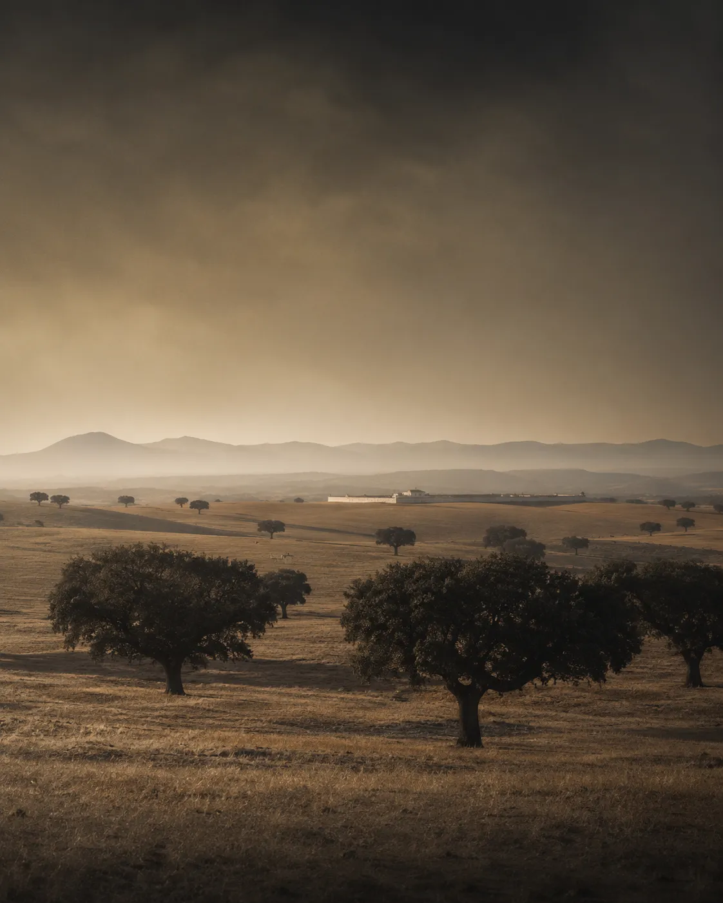
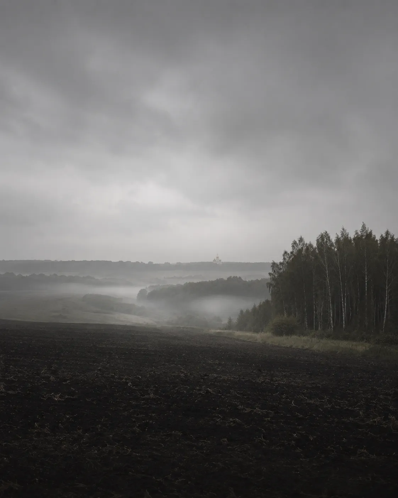
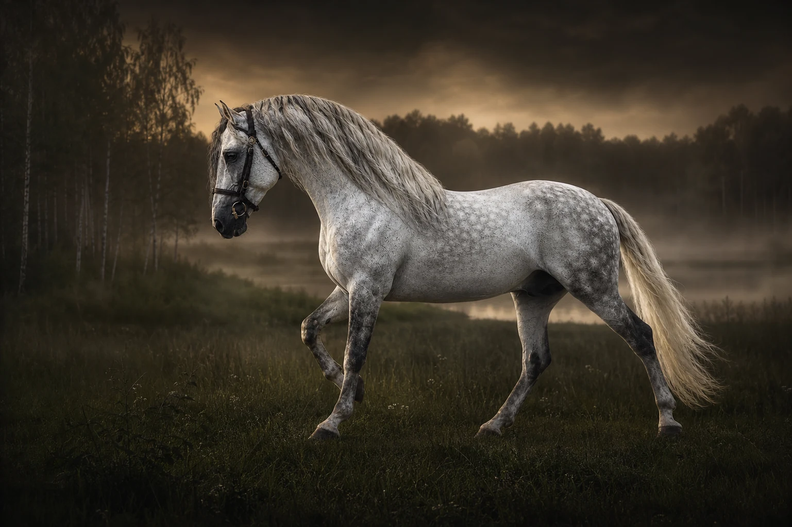
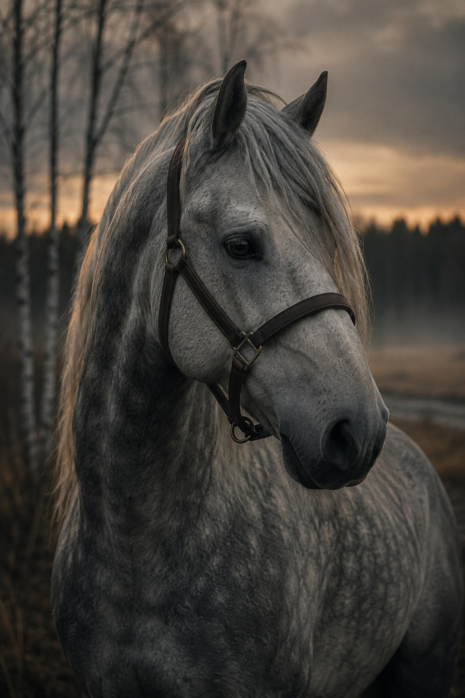
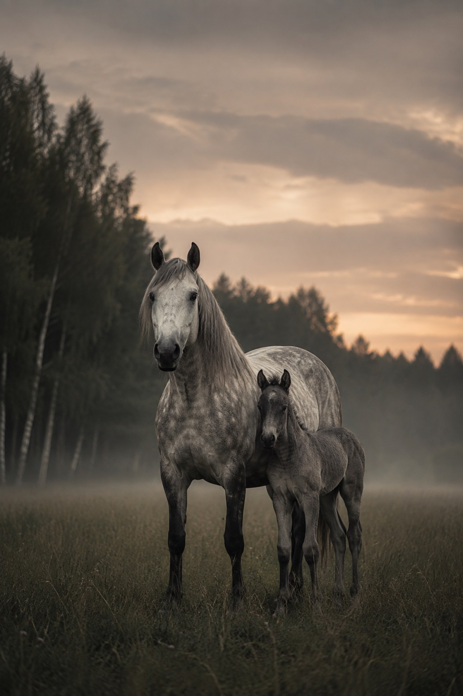
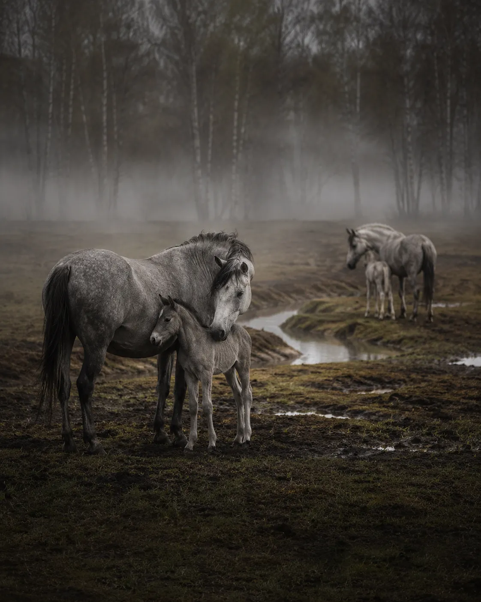
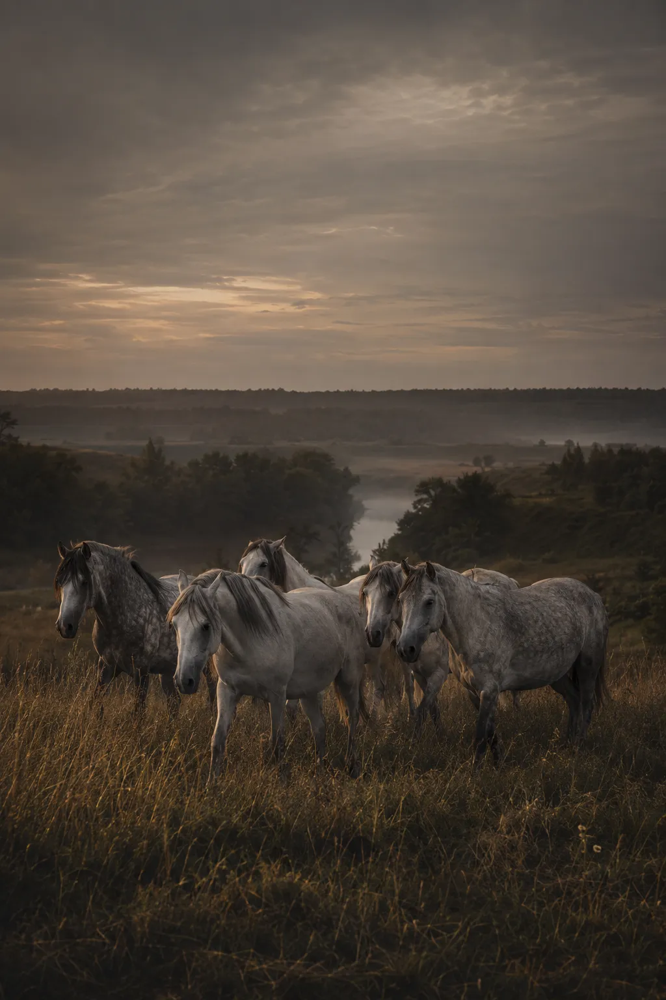
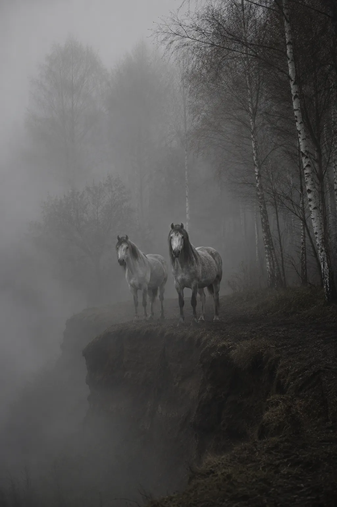
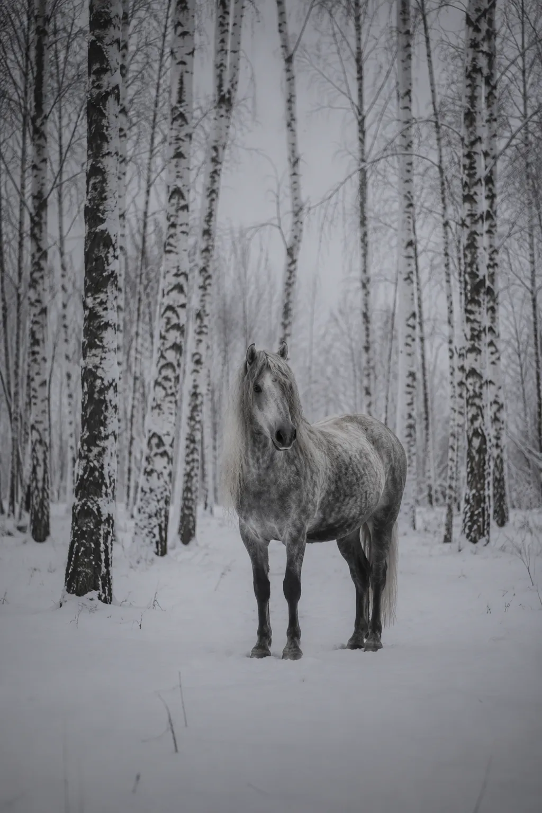

Заявка
Напишите, какая лошадь интересует. Пришлём актуальные фото, видео в движении и под седлом, состав документов.
Pura Raza Española
Yeguada MS. Разведение андалузских лошадей PRE в Тульской области.
I


Yeguada MS живёт на стыке этих двух начал.

II
Основана Марией Солдатовой
Yeguada MS разводит чистопородных PRE и кросс-андалузов. Цель фермы - широкие движения, барочный экстерьер и доброжелательный характер.
Лошади растут в табуне, много двигаются по холмистым пастбищам и с раннего возраста общаются с человеком. Ферма сохраняет узнаваемый испанский тип в условиях русской земли.
«Спокойная сила видна не в декоре. Она видна в движении лошади».

«Лошадь нельзя вырастить быстро. Её можно только дождаться».
Мария Солдатова
III
Жеребцы, кобылы и молодняк фермы. Откройте карточку, чтобы посмотреть промеры, происхождение и документы.



IV
Селекционная программа
Основной производитель фермы - Bucefalo XXXII. Серый жеребец PRE, импортированный из Испании и проверенный по потомству.
Линия
V
Чернозёмные поля, холмистые пастбища, река и табунное содержание создают естественную среду для молодняка и взрослых лошадей.


Четыре состояния одной земли. Лошади проходят их полностью, и это видно в них.




VII
Приезжайте познакомиться с лошадьми Yeguada MS лично.
Да. Свяжитесь с Марией и согласуйте дату перед поездкой.
Запросите актуальные материалы конкретной лошади напрямую у фермы.
Документы и данные студбука показываются для конкретной лошади по запросу.
Да. Подбираем коневоз и помогаем с оформлением перемещения.